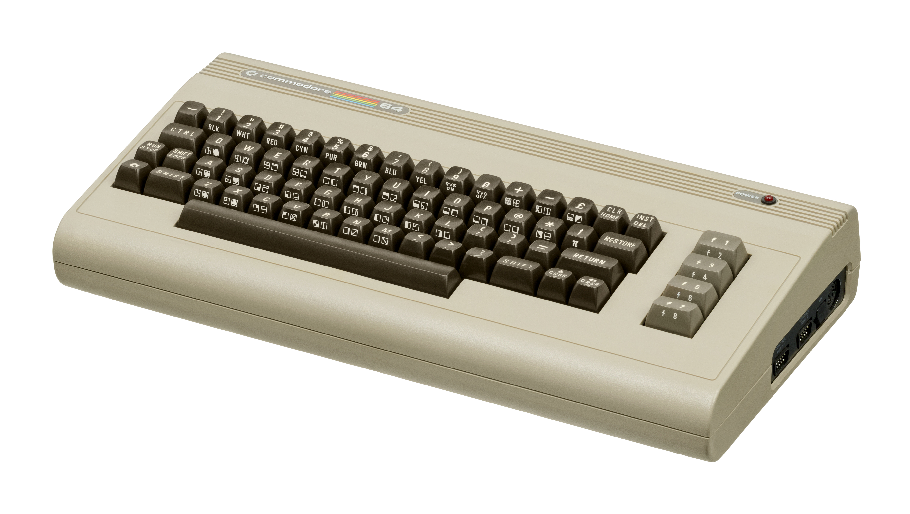

In 1982, Commodore introduced the Commodore 64 (C64), a personal computer that quickly became a legend in home computing. It was not just a machine, it was a gateway to gaming, creativity, and programming for millions of people. With its affordable price, impressive graphics, and great sound capabilities, the C64 stood out as a true technological breakthrough, selling over 17 million units, making it one of the best-selling home computers of all time.
One of the things that made the Commodore 64 special was its versatility. It was not just for playing games also used for programming, music creation, and even small business applications. The computer came with BASIC programming built-in, meaning users could immediately start experimenting with coding. For many children and hobbyists, the C64 was their first experience with programming, sparking a lifelong passion for computers and technology.
Storage was different back then. Unlike today instant downloads, the Commodore 64 used cartridges, cassette tapes, and floppy disks to load programs and games. Loading a game from a cassette tape could take minutes, adding a layer of anticipation before the fun began! Despite the slow load times, the system ability to handle various storage formats made it highly flexible.
Gaming was one of the biggest reasons for the C64 success. It had an incredible library of classic games, from platformers to action-packed adventures. Popular titles like The Last Ninja, Impossible Mission and Maniac Mansion showcased the system powerful graphics and sound capabilities, making it a favourite among gamers. Its SID (Sound Interface Device) chip provided amazing sound quality, leading many musicians and developers to experiment with chiptune music, an entire genre inspired by vintage computer sounds.
Beyond gaming, the Commodore 64 played a huge role in shaping the 1980s home computer boom. It introduced millions to computing and contributed to making personal computers more common in households. Whether people were coding simple animations, playing arcade-style games, or connecting to early bulletin board systems (a predecessor to the internet), the C64 represented an era of innovation and excitement in digital technology.
Even today, the Commodore 64 has a loyal following. Retro enthusiasts and collectors still celebrate its impact, and many of its classic games are available on modern platforms. It remains a shining example of how **a single computer can shape an entire generation relationship with technology from casual gaming to serious coding.